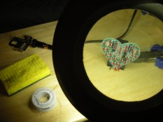

Burying the lead
Today I took a huge step and did something that was at the top of my list of things I wanted to learn. I soldered. It was a fantastic experience. I purchased some cheep and awesome tools from ebay and radio shack and a heart shaped soldering kit called the flashing led sweetheart. I have yet to find a 9 volt battery to try it out and see if it works, so keep posted for the update.
 I mention in the video the idea of a black box. Everyone has black boxes in something, for me I have a weak knowledge of how cars actually work and what is under the hood is a potent ial black box for many. For me my biggest bother is not knowing how electronics actually work, I build desktop computers and know how the macro parts fit together like the motherboard, processor, hard drive, etc, but how do those things work on a micro level? This has been bothering me, even a small breath of knowledge would curb my anxiety on the subject. So, I set out in the physical world to get some answers, sure I could have sat on my computer for hours looking through wikipedia about how leds work but that is no fun.
My philosophy on many things in life is that you need a “practical” reason to do something to actually get you to do it. Why would one learn how to program if they don’t have the desire to create programs? Why would one learn how to solder if they don’t have the desire to create electronic devices? There where times where I was forcing myself to learn programming and had no clue why I was learning what I was learning, it had no practical aspect, sure I wanted to create programs but I had no clue what I was learning would get me to the result I envisioned. I good example is learning about PHP variable types and arrays not seeing how this could help you create a blog. Sometimes the pieces seam fragmented and no light at the end of the tunnel seams fathomable. Ultimately if you stick with something long enough you can become novice at it and rule your dominion. You have the ability to understanding exactly how every piece fits and where the next piece is, this to me is pure bliss, and entirely worth the trial.
UPDATE: It works!